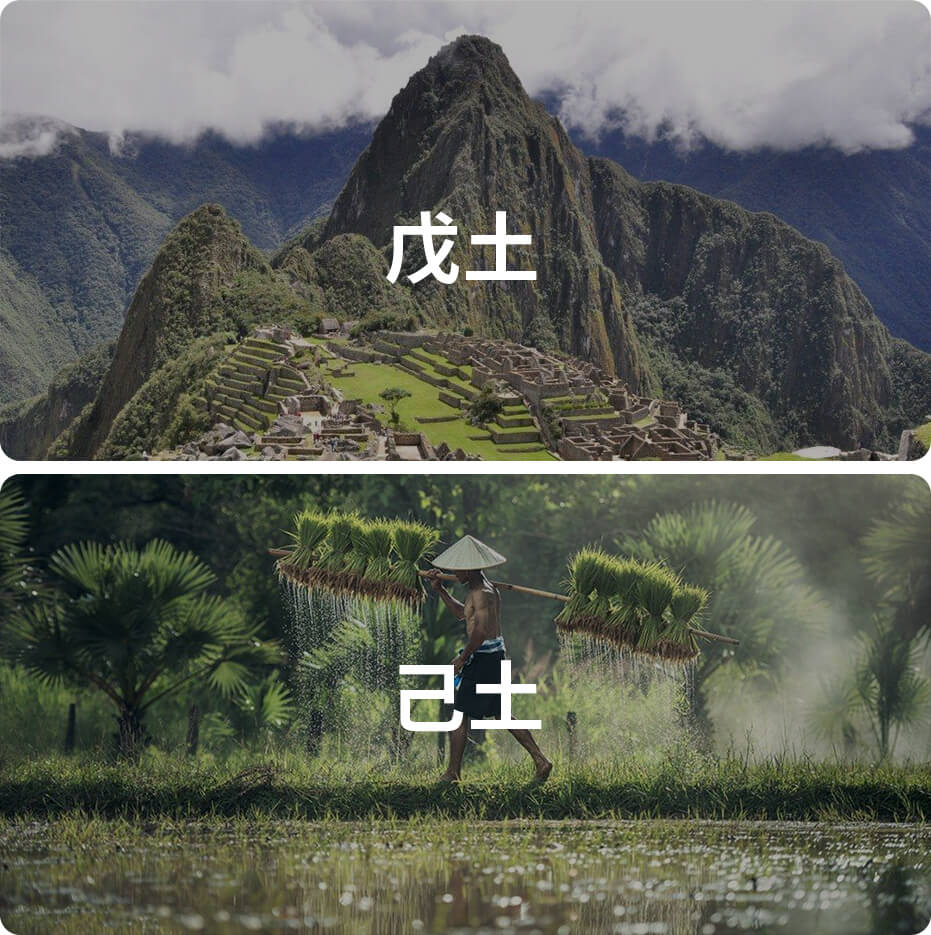

己土在十天干里排行第六位，属阴土，主信。
自然属性：田园之土

己土性格：
包容、诚信、可塑性强
关键词：包容
己土就像田园之土，它肥沃、湿润，孕育着万千种植被和作物，所以己土代表着无私的接纳与包容。己土之人，给人的感觉总是和和气气的，拥有着相当好的人缘。
关键词：诚信
己土承载万物，默默奉献而不争，只要付出汗水辛勤耕作，大地就能反馈收成，己土代表着诚信、可信赖、可倚靠。所以他们能在事业上获得良好的合作关系，容易获得贵人支持。
关键词：可塑性强
己土没有形状，同时也代表着它可以塑造成一切形状。人们可以按着自己的需求，可以把土与水混合，烧纸成砖石，砌成房屋；甚至可以把土制成精美的瓷器，成为艺术品供人欣赏。所以己土之人，在职场具有极佳的培养潜力，是个多面手！
己土日主人的正面性格：包容，忍耐，学习能力强，能深入了解问题，多才多艺，有弹性，不固执，善于模仿，任劳任怨的大后方，默默付出，辅助型人才。
己土日主人的负面性格：疑心重，过度谨慎，内心复杂矛盾，心思较不易集中，易迷茫，易消极妥协，易被人利用。
诗诀
已土生人多主才，放出账去要不来。
在家发下天大恨，见面生情抹不开。
说上几句顺情话，心慈面软你回来。
任何自己过不去，好心慈善闷在怀。
（性格气质需要综合命局的五行、十神、用神等特质综合评判，此处仅提供己土日主维度的特质参考，需知己土越旺，则己土特性越明显）
己土名人：
周润发、李连杰、王力宏、杨丞琳、梁洛施、陈奕迅、 汪明荃、钟欣桐
己土类象
田园、墓地、卧室、秘书、鼻面、脾胃、胰脏、腹部、疮、幼教、妇产科、农作物、生活日用品。
《滴天髓》论己土
己土卑湿，中正蓄藏，不愁木盛，不畏水狂，火少火晦，金多金光，若要物旺，宜助宜帮。
《渊海子平》论己土
己土田园属四维，坤深能为万物基。水金旺处身还弱，火土功成局最奇。
失令岂能埋剑戟，得时方可用鎡基。漫夸印旺兼多合，不遇刑冲总不宜。